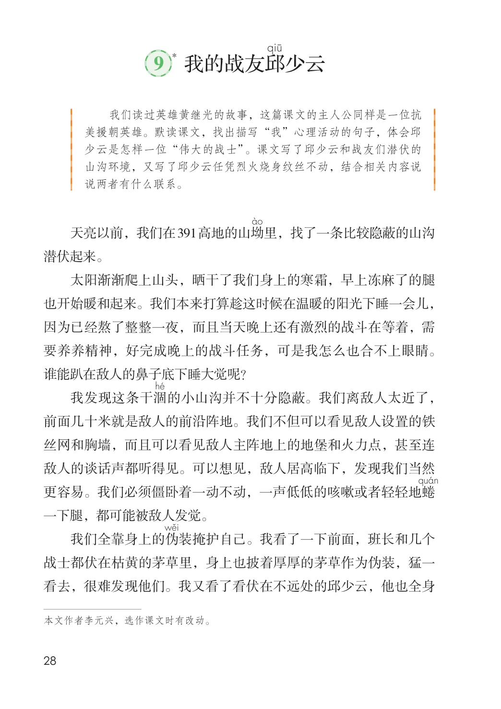
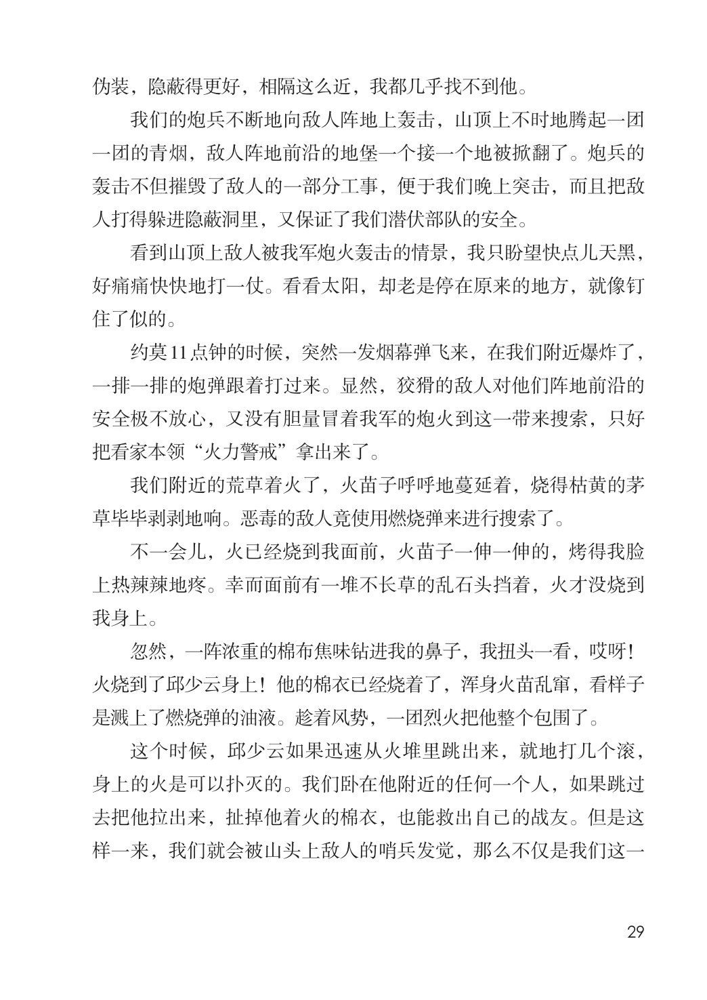
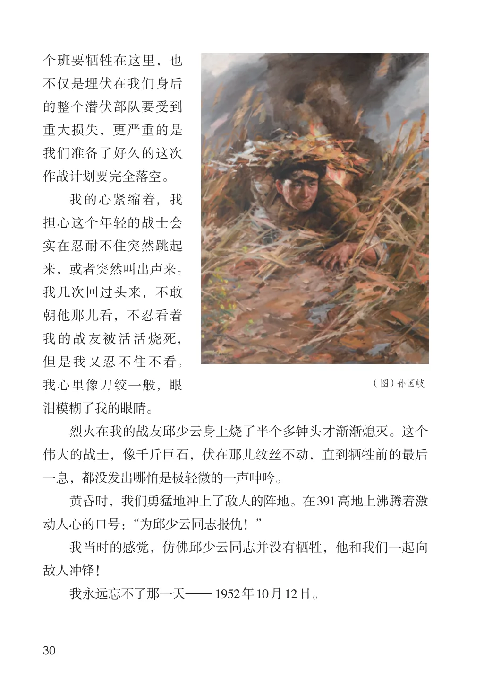

第二单元 · 第 9 课
我的战友邱少云
文字内容 PDF 第 33 页
少云
课后练习
- 我们读过英雄黄继光的故事，这篇课文的主人公同样是一位抗美援朝英雄。默读课文，找出描写“我”心理活动的句子，体会邱少云是怎样一位“伟大的战士”。课文写了邱少云和战友们潜伏的山沟环境，又写了邱少云任凭烈火烧身纹丝不动，结合相关内容说说两者有什么联系。天亮以前，我们在391高地的山坳里，找了一条比较隐蔽的山沟潜伏起来。太阳渐渐爬上山头，晒干了我们身上的寒霜，早上冻麻了的腿也开始暖和起来。我们本来打算趁这时候在温暖的阳光下睡一会儿，因为已经熬了整整一夜，而且当天晚上还有激烈的战斗在等着，需
- 要养养精神，好完成晚上的战斗任务，可是我怎么也合不上眼睛。谁能趴在敌人的鼻子底下睡大觉呢？我发现这条干涸的小山沟并不十分隐蔽。我们离敌人太近了，前面几十米就是敌人的前沿阵地。我们不但可以看见敌人设置的铁丝网和胸墙，而且可以看见敌人主阵地上的地堡和火力点，甚至连敌人的谈话声都听得见。可以想见，敌人居高临下，发现我们当然更容易。我们必须僵卧着一动不动，一声低低的咳嗽或者轻轻地蜷一下腿，都可能被敌人发觉。我们全靠身上的伪装掩护自己。我看了一下前面，班长和几个战士都伏在枯黄的茅草里，身上也披着厚厚的茅草作为伪装，猛一看去，很难发现他们。我又看了看伏在不远处的邱少云，他也全身
文字内容 PDF 第 34 页
伪装，隐蔽得更好，相隔这么近，我都几乎找不到他。
我们的炮兵不断地向敌人阵地上轰击，山顶上不时地腾起一团一团的青烟，敌人阵地前沿的地堡一个接一个地被掀翻了。炮兵的轰击不但摧毁了敌人的一部分工事，便于我们晚上突击，而且把敌人打得躲进隐蔽洞里，又保证了我们潜伏部队的安全。
看到山顶上敌人被我军炮火轰击的情景，我只盼望快点儿天黑，好痛痛快快地打一仗。看看太阳，却老是停在原来的地方，就像钉住了似的。
约莫11点钟的时候，突然一发烟幕弹飞来，在我们附近爆炸了，一排一排的炮弹跟着打过来。显然，狡猾的敌人对他们阵地前沿的安全极不放心，又没有胆量冒着我军的炮火到这一带来搜索，只好把看家本领“火力警戒”拿出来了。
我们附近的荒草着火了，火苗子呼呼地蔓延着，烧得枯黄的茅草毕毕剥剥地响。恶毒的敌人竟使用燃烧弹来进行搜索了。
不一会儿，火已经烧到我面前，火苗子一伸一伸的，烤得我脸上热辣辣地疼。幸而面前有一堆不长草的乱石头挡着，火才没烧到我身上。
忽然，一阵浓重的棉布焦味钻进我的鼻子，我扭头一看，哎呀！火烧到了邱少云身上！他的棉衣已经烧着了，浑身火苗乱窜，看样子是溅上了燃烧弹的油液。趁着风势，一团烈火把他整个包围了。
这个时候，邱少云如果迅速从火堆里跳出来，就地打几个滚，身上的火是可以扑灭的。我们卧在他附近的任何一个人，如果跳过去把他拉出来，扯掉他着火的棉衣，也能救出自己的战友。但是这样一来，我们就会被山头上敌人的哨兵发觉，那么不仅是我们这一
文字内容 PDF 第 35 页
个班要牺牲在这里，也不仅是埋伏在我们身后的整个潜伏部队要受到重大损失，更严重的是我们准备了好久的这次作战计划要完全落空。
我的心紧缩着，我担心这个年轻的战士会实在忍耐不住突然跳起来，或者突然叫出声来。我几次回过头来，不敢朝他那儿看，不忍看着我的战友被活活烧死，但是我又忍不住不看。（图）孙国岐我心里像刀绞一般，眼泪模糊了我的眼睛。
烈火在我的战友邱少云身上烧了半个多钟头才渐渐熄灭。这个伟大的战士，像千斤巨石，伏在那儿纹丝不动，直到牺牲前的最后一息，都没发出哪怕是极轻微的一声呻吟。
黄昏时，我们勇猛地冲上了敌人的阵地。在391高地上沸腾着激动人心的口号：“为邱少云同志报仇！”
我当时的感觉，仿佛邱少云同志并没有牺牲，他和我们一起向敌人冲锋！
我永远忘不了那一天— 1952年10月12日。
原版对照
原书页面与全部插图
点击图片可查看大图。


